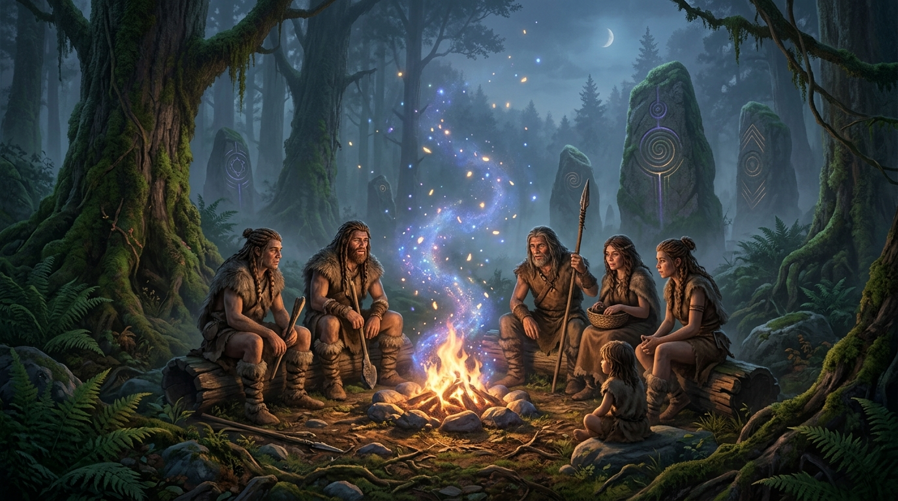

WorldBuilding Hub
A collection of first-principles worldbuilding settings, derived species ecologies, and systemic magic frameworks by Sontlux.
Worldbuilding Settings
Select a project below to explore its interactive sandbox, derived species, concept art, and design specifications.

Flagship SpecThe Second Fire
What if magic evolved like language and was controlled like fire? A world built on 7 laws of cognitive substrate, metabolic costs, monomaniacal elves, terroir dwarves, and civilization-destroying ether overflow.
Future Setting 02
Expansion slot for your next first-principles worldbuilding setting or speculative magic system.
Worldbuilding Methodology
First-Principles Derivation
Starting from a single physical anchor (thermodynamics, language, cognitive substrate) and deriving all physics, species adaptations, and historical conflicts without hand-waving.
Structural Species Ecologies
Species aren't aesthetic human tropes in costumes. Biology, psychology, and social structures emerge directly as evolutionary adaptations to the physical laws.
Productive Misunderstanding
Civilizations collapse and rise because inhabitants build religious and political institutions on incomplete models of physical laws.